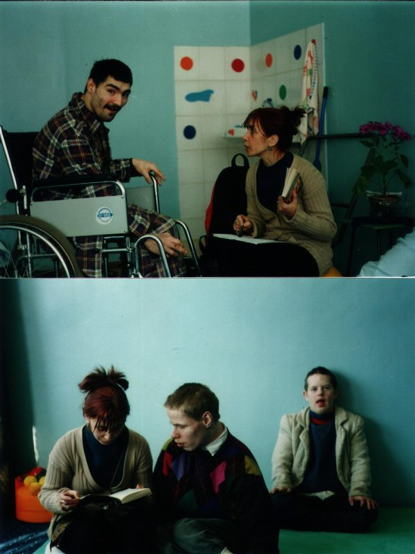

О нас
Online Галерея «Your Life Picture Gallery» (YLP Gallery) является проектом АНО «Твоя картина жизни» и представляет собой современную выставочную площадку проектов и художников работающих в стиле outsider art / brut art/ raw art. Целью деятельности Автономной некоммерческой организации «Твоя картина жизни» является разработка и реализация социально ориентированных проектов и программ в области культуры и искусства. Социальные проекты демонстрируют такую высокую мотивацию участников к изменениям, такое сильное желание работать с самими собой, что способны менять реальность и общество. В целевые группы, которых готова поддерживать организация, входят люди разных возрастных категорий: люди с особенностями развития; люди с различными формами инвалидности, в том числе с тяжелой формой; пациенты психиатрических учреждений; люди, переживающие кризисные состояния. В то же время проекты организации открыты для всех, кто осознает искусство, как часть своей жизни. Это свободное пространство для реализации интеграционных проектов, в которых принимают участие люди из уязвимых социальных групп, те, кого принято называть аутсайдерами, а также профессионалы в области искусства и культуры, сотрудники общественных организаций и многие другие. Это пространство для реализации художественных идей и амбиций, которые могут объединять, вдохновлять и поддерживать участников бесконечно разных проектов и инициатив.
Our Founder
Учредитель организации Елена Шифферс живёт в Санкт-Петербурге. Изучала театроведение в Ленинградском институте театра, музыки и кинематографии, в этот же период - актриса в «Театре Юных Зрителей», снималась в кино. Преподавала в Художественно-промышленной академии им. А.Л.Штиглица.
В 2000 г. при поддержке руководителей общественной организации «Перспективы» Маргарете фон дер Борх и Марии Островской организовала театральную студию в психо-неврологическом интернате № 3 в Петергофе. Деятельность студии во многом опирается на концепцию «Театр Мертвого дома», которая принадлежит Евгению Шифферсу (1934 -1997 г.г.) - известному режиссеру, писателю, философу.
В основе концепции лежит модель театра в тюрьме, описанная Ф.М.Достоевским в романе «Записки из Мертвого дома»: это маленький театр, где нет возможности и нет необходимости использовать внешние эффекты, где единственным инструментом создания спектакля является личность человека. С 2004 по 2019г. г. включительно - координатор арт-программы общественной организации «Перспективы» в интернате (театр, арт-студия, музыка). С 2007 года и по настоящее время является одним из руководителей международного проекта «Театр без границ».
Спектакли проекта дважды (в 2015 и 2017 г.г.) становились лауреатами Российской национальной премии и фестиваля театрального искусства Арлекин в престижной номинации Приз зрительских симпатий «Глазами детей».